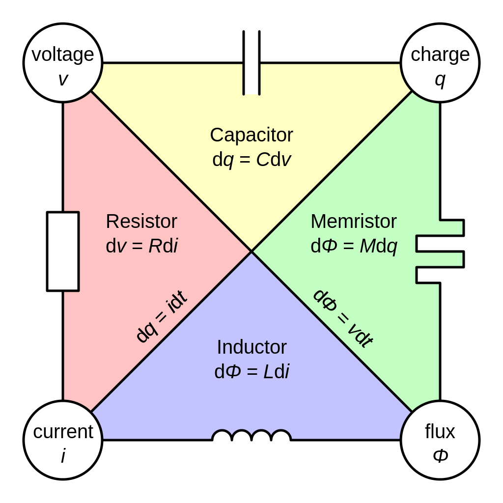
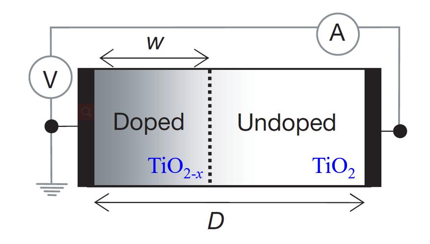
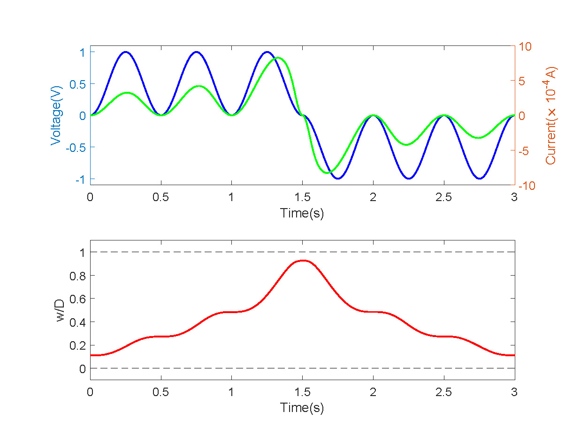
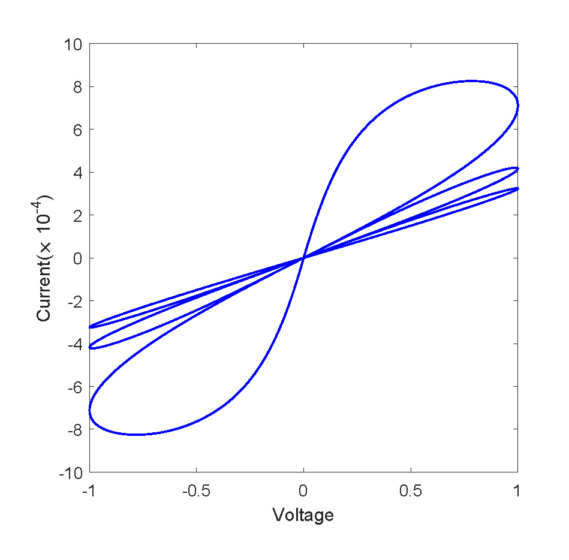

Memristor - the missing circuit element
绪论
1971 年，美国加州大学伯克利分校的科学家蔡少棠教授（Prof. Leon Chua）提出了忆阻器（Memristor）的概念. 从统计学的角度和完备性的概念，推断忆阻器的存在.
电路方程中的基本变量有四个，即电压 $V$ 、电流 $I$ 、电荷 $q$ 与磁通量 $\varphi$，四个变量对应六种关系，若将磁通量与电荷的关系定义为 ${\rm{d}}\varphi=M{\rm{d}}q$ （其中 $M$ 为忆阻器阻值，$\varphi$ 为电荷通量，$q$ 为电荷量），这便是第四个基本电路元件：记忆电阻器.
数学模型
忆阻器模型根据电流电压特性分为理想忆阻器模型和实际忆阻器模型，惠普忆阻器是目前应用最普遍的理想忆阻器模型，惠普忆阻器的数学模型如公式所示
其中 $M(t)$ 为忆阻值， $\mathcal{R}_ {\text {on}}$ 和 $\mathcal{R}_ {\text{off}}$ 是忆阻器电阻的极限值， $w(t)$ 是含有氧原子空位的 $\rm{TiO}_ {2-\mathrm{x}}$ 厚度变化 率， $D$ 是薄膜的厚度， $\mathcal{R}_ {\text{on}}$ 是当 $\mathrm{TiO}_ {2-x}$ 厚度达到最大值，即 $w(t)=D$ 时忆阻器的阻值， $\mathcal{R}_ {\text {off }}$ 是当 $\mathrm{TiO}_ {2-\mathrm{x}}$厚度达到最小值，即 $w(t)=0$ 时忆阻器的阻值.
对于忆阻器模型有
$$ \begin{equation} \frac{\mathrm{d} w(t)}{\mathrm{d} t}=\frac{\mu_ {\mathrm{V}} R_ {\mathrm{on}}}{D} i(t) \end{equation} $$
其中 $\mu_ {\mathrm{V}}$ 为平均离子迁移率，即氧空位的迁移率. 可以看出一定电流的作用下 $\mathrm{TiO}_ {2-x}$ 厚度的变化率即忆 阻器阻值变化速率与 $\mu_ {\mathrm{V}}$ 和 $\mathcal{R}_ {\text {on}}$ 成正比，与 $D$ 成反比. 当 $w(0)=w(t)|_ {t=0} \neq 0$ 时，可以得到
$$ \begin{equation} w(t)=\frac{\mu_ {\mathrm{V}} \mathcal{R}_ {\mathrm{on}}}{D} q(t)+w(0) \end{equation} $$
可以写成
$$ \begin{equation} M(t)=M(0)+k q(t) \end{equation} $$
其中，常数为
$$ \begin{equation} k=\frac{\left(\mathcal{R}_ {\mathrm{on}}-\mathcal{R}_ {\mathrm{off}}\right) \mu_ {\mathrm{V}} \mathcal{R}_ {\mathrm{on}}}{D^{2}} \end{equation} $$
当满足条件 $\mathcal{R}_ {\text {on }} \ll \mathcal{R}_ {\text {off }}$ 可以化简为
$$ \begin{equation} M(q)=\mathcal{R}_ {\mathrm{off}}\left(1-\frac{\mu_ {\mathrm{V}} \mathcal{R}_ {\mathrm{on}}}{D^{2}} q(t)\right) \end{equation} $$
此时忆阻器的忆阻值 $M(t)$ 与流过忆阻器的电荷 $q(t)$ 的关系为:
$$ \begin{equation} \frac{\mathcal{R}_ {\text {off }}-M(t)}{k} \leq q(t) \leq \frac{\mathcal{R}_ {\text {on }}-M(0)}{k} \end{equation} $$
即当 $q(t) \geq \frac{\mathcal{R}_ {\text {on }}-M(0)}{k}$ 时, $t$ 时刻忆阻器阻值 $M(t)=\mathcal{R}_ {\text {off }}$ 当 $q(t) \leq \frac{\mathcal{R}_ {\text {off }}-M(t)}{k}$ 时, $t$ 时刻忆阻器阻值 $M(t)=\mathcal{R}_ {\text {on }}$. 为了方便求解，定义 $x=w(t) / D$ ，最终我们可以化简为以下方程
初始情况下由于具有初始电阻故 $x_ {0} \neq 0$ ，并具有关系 $x_ {0}=\frac{\mathcal{R}_ {\text {off }}-\mathcal{R}_ {\text {int }}}{\mathcal{R}_ {\text{off}}-\mathcal{R}_ {\text {on }}}$
计算机模拟
根据公式可以看出, 忆阻器的忆阻特性由 $R_ {\mathrm{on}}, R_ {\text {off }}, M(\mathrm{t}), M(0)$ 和 $D$ 决定，本文选定以下参数的忆阻器进行分析.
如果施加正余弦性的电压幅值情况，那么将会形成3个对应的loop响应。
 